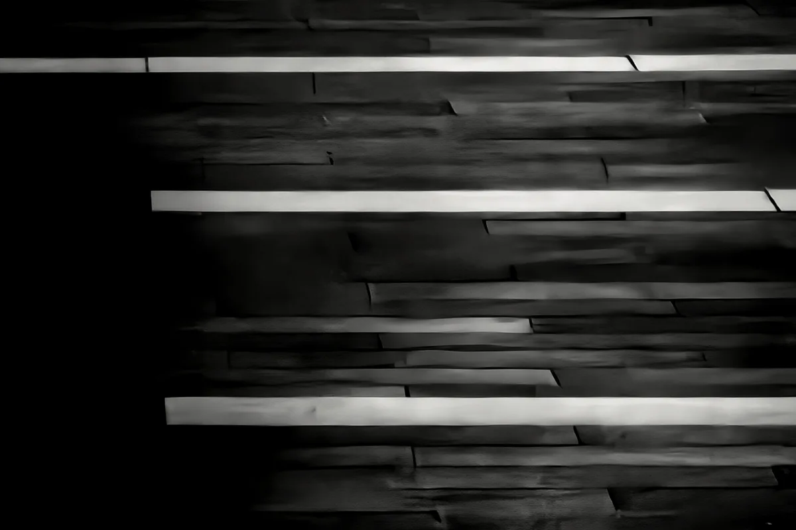
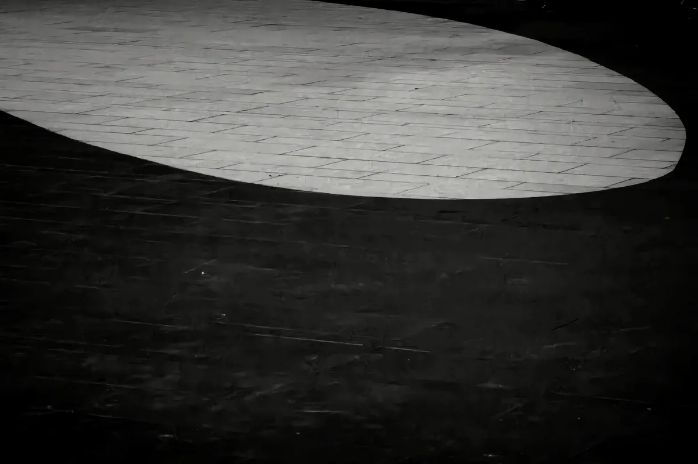
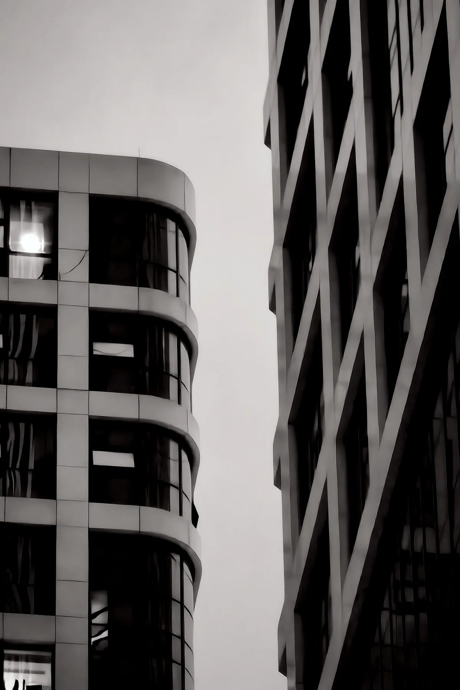
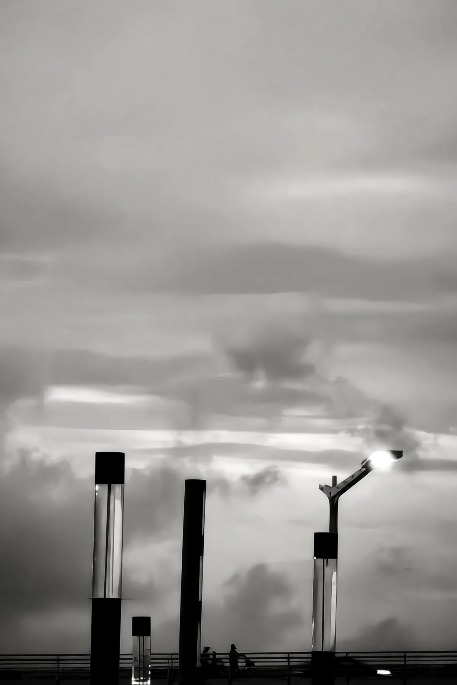
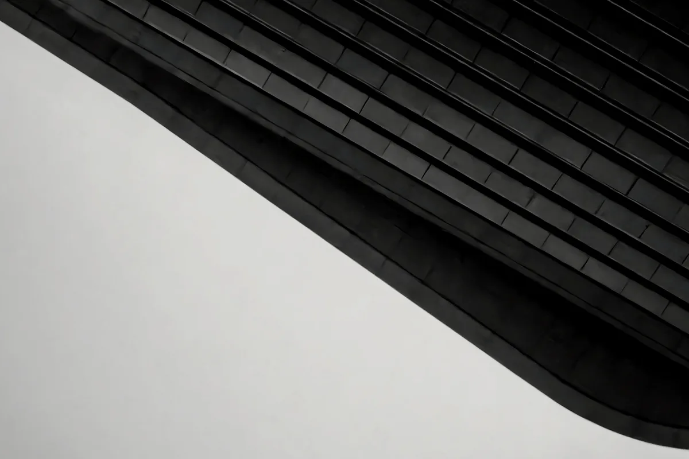
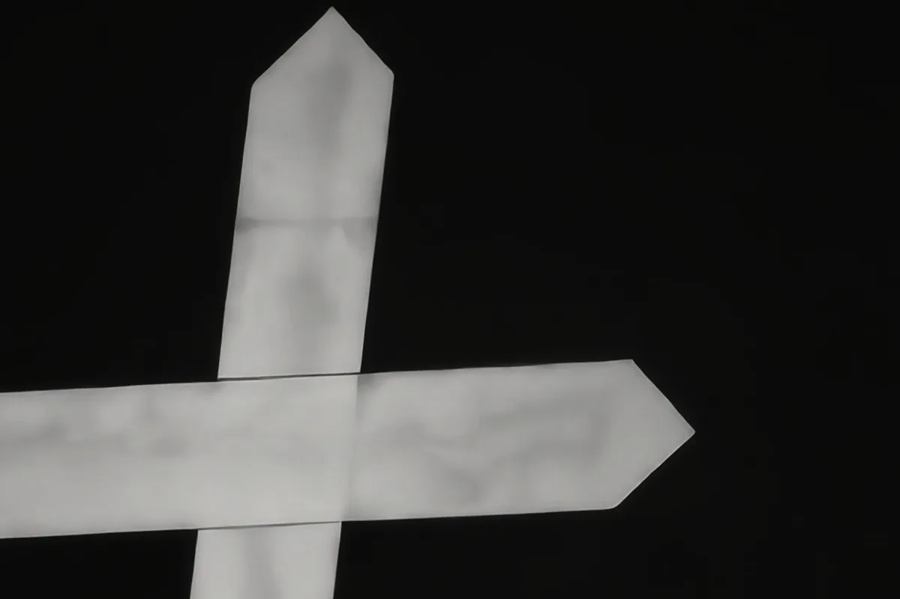

01
层理
横向条带在深黑的背景里层层堆叠，最亮的一条从暗色条带群里跳出来，成为明确的重音，左侧的纯黑留出一片呼吸区。原本均匀的节律，裁紧之后变成了有主次的陈述。
立面细节 · 视觉重音城市的几何与光的减法 —— 七张长焦黑白习作
这组照片拍于城市街头，全部来自一台手机的长焦端。5.5 倍到 10 倍的变焦把空间压缩、把上下文剥离，熟悉的城市于是变成了陌生的块面与线条。黑白在这里不是滤镜，而是一次主动的减法：去掉颜色之后，剩下的只有构成关系——线与面的交叠、光与暗的切割、实与虚的呼吸。
我拍的其实不是建筑本身，而是建筑身上那些「线条、块面与光的构成关系」。大面积的留黑、果断的剪影、克制的反差，是这七张习作共同的语言。它们未必完美，但每一张都来自一次认真的观看。
按快门顺序陈列 · 每帧附拍摄手记

横向条带在深黑的背景里层层堆叠，最亮的一条从暗色条带群里跳出来，成为明确的重音，左侧的纯黑留出一片呼吸区。原本均匀的节律，裁紧之后变成了有主次的陈述。
立面细节 · 视觉重音
一束光落在铺装地面上，四周三分之二的画面沉入纯黑，像舞台上无人应答的追光灯。明暗的切割足够果断，负空间用得很狠——这是全组情绪最足的一张。
光斑 · 负空间
左侧的圆弧立面与右侧的网格结构隔空对望，一柔一刚，是这张照片的灵魂。中间的浅色天空做成最安静的隔离带，让两种几何各自成立。高倍变焦下边缘略有涂抹，但不妨碍这场对话。
建筑对话 · 曲线与网格
翻滚的云层之下，灯柱排成竖线的韵律，唯有一盏亮着，成为画面唯一的亮点。栏杆后隐约的人影，让抽象里多了一点人间。点、线、面三层结构齐备，是全组信息组织最完整的一张。
天光 · 点线面
波浪般的屋檐顶着画面上沿走，层叠的台阶填满下方，低机位仰拍的尺度感仍在。裁掉空天之后，曲线成为构图的绝对主轴，动势比先前更足。
仰拍 · 曲线主轴
十字与双向箭头被单独隔离在纯黑底上，褪去指路的功能，成为纯粹的图形符号；下方一行拼音留住了街头的出处。贴得够近、取得够少，图形感自然成立。
街头偶遇 · 纯图形塔吊的桁架剪影斜穿灰色的天空，一条钢索在下方若隐若现，做了安静的副线。留白与主体的比例、倾斜的动势都恰到好处——工业极简最安静的一刻，也是全组技术完成度最高的一张。
剪影 · 工业极简5.5 倍到 10 倍的长焦压缩了空间，也剥离了上下文：建筑不再是建筑，而是块面与线条。想放大输出时，尽量守在 5.5 倍原生焦段，靠后期裁切代替数码变焦，换更干净的边缘。
三分之二的暗场不是浪费，是让负空间说话。很多初学者不敢大面积留黑，但黑白摄影里，空的地方往往比满的地方更有力量。
高反差有冲击力，但别一味拉高。适当保留一点中间灰，画面才有层次、才耐看。两极之间的那段灰，才是黑白摄影的呼吸所在。